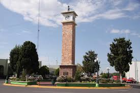
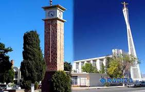

Considerado uno de los emblemas de la ciudad. Está escrito en su placa: H. ayuntamiento 1947-1949 Cd. Delicias, Chihuahua Latitud Nte. 28°11’ Longitud Wg 105°30’ Altitud 1165 Metros Delicias es una ciudad agrícola, ganadera e industrial, ubicada a 65 km al sur de la capital Chihuahua y a 70 km al norte de Camargo. A pesar de ser el municipio más pequeño del Estado, es uno de los más poblados, considerándose una de las ciudades más importantes del estado junto a Ciudad Juárez , Chihuahua, Ciudad Cuauhtemoc y Parral,. Cabecera del Municipio de Delicias El reloj es el centro geográfico de la Ciudad, de ahí parten las vías públicas que dividen a Delicias en cuatro sectores, pero no es solo eso, allí palpita el corazón que da vida y alimenta el diario acontecer de una basta región. En las calles que circulan el reloj estuvieron las oficinas de la S.A.R.H., la J.M.A.S., la Asociación Civil de Usuarios, el Registro Civil, el Registro Público de la propiedad y la Presidencia Municipal. Los actos trascendentales de la vida del hombre de Delicias, tuvieron siempre como fondo la majestuosa presencia del Reloj: el registro de un hijo... de una propiedad, la firma de un contrato de matrimonio, el tramite de un juicio o la obtención de los pocos metros cuadrados de la tierra en que reposan nuestros seres amados. La vida y la muerte se entrelazaban en una ronda infinita. Allí se tramitaba lo necesario para planear la agricultura que dio vida, sustento y riqueza a una población Pujante y emprendedora, allí se pagaba lo mismo el agua el sector urbano y la del riego de los ricos sembradíos. Si la calle tercera norte atesora el dinero en el sector comercial, casas de cambio y bancos, en el círculo del reloj palpita el pulso de la vida que el agua representa. Allí enfrente al reloj esta también el Presidente Municipal, la máxima autoridad civil y sus colaboradores, en la empresa común de administrar los bienes y servicios. El círculo del reloj es el lugar al cual todos asistimos en momentos especiales de la vida y cuyo pulso marca el ritmo de la historia. Punto inicial... arterias que nacen y se prolongan... vías que guían... meta a que aspira el hombre público y punto de reunión en el acaecer cívico. La vida en su principio y en su fin gira alrededor de un círculo fatal que teje esperanzas con desilusiones, logros con proyectos y sueños con realidades. Al círculo del reloj lo hemos elegido como un símbolo que nos inspira y que nos ubica en el centro mismo de nuestro mutuo lugar de convivencia, el círculo que une. .. el agua que da vida... y el tiempo, extraña dimensión que mide la breve existencia humana.
|  |  |